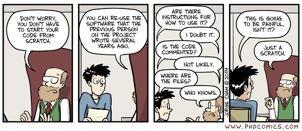
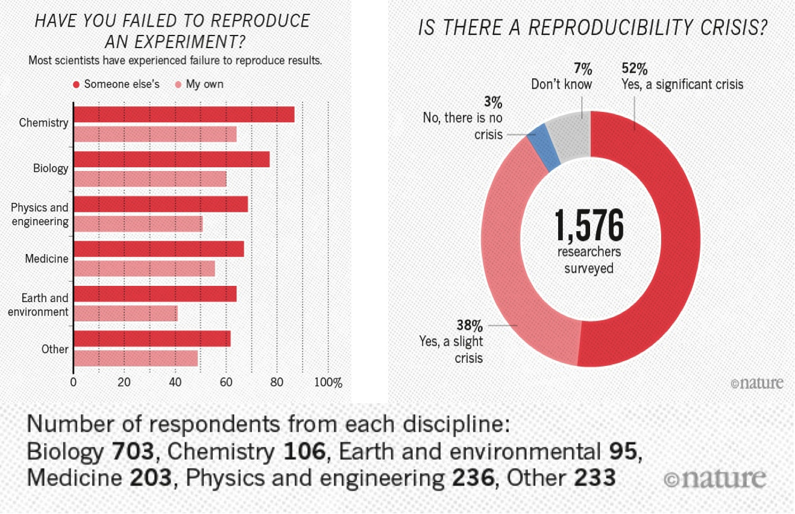
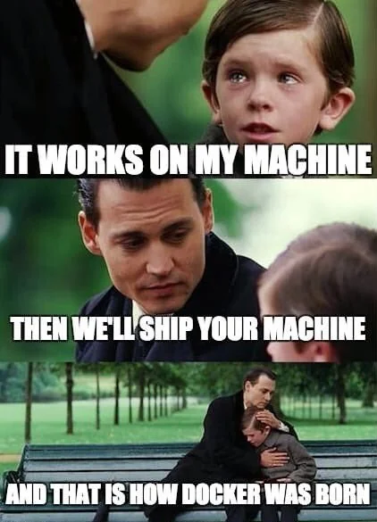

Reproducible research
Objectives
Understand why computational reproducibility is important.
Get familiar with terminology around computational reproducibility.
Understand that there are tools available to support reproducibility.
These materials are adopted from CodeRefinery lesson Reproducible research.
Introduction

[Picture by Heidi Seibold]
The CodeRefinery workshop touches upon all these topics. Here we only have time to take a brief look at some of the steps.
Small steps towards reproducible research
If this is all new to you, it may feel quite overwhelming.
Our recommendation: Don’t worry! Focus on “good enough” understanding to continue reading up on the topics.
As a data steward you may never implement all of these practices yourself.
But your role may be to:
Recognize reproducibility risks
Ask the right questions
Point researchers to appropriate tools
Interpret what “sufficient” reproducibility looks like in different contexts
We generally recommend researchers to start by picking one topic that seems reasonable to implement for their current project. Something that helps THEM right now. This may be something they may have to implement due to requirements from funders or the journal where they want to publish your research. Their requirements can be used as a checklist and find tools that feel comfortable for them.
A great way to see what are the really important things to implement is to meet with a colleague, exchange codes and try to run each others code. Every question the colleague has to ask about the code gives a hint on where things may need to improve.
Keeping a “log book” while working on code also serves as a great basis for making code more reproducible.
Motivation

A scary anecdote
A group of researchers obtain great results and submit their work to a high-profile journal.
Reviewers ask for new figures and additional analysis.
The researchers start working on revisions and generate modified figures, but find inconsistencies with old figures.
The researchers can’t find some of the data they used to generate the original results, and can’t figure out which parameters they used when running their analyses.
The manuscript is still languishing in the drawer …
Why talking about reproducible research?
A 2016 survey in Nature revealed that irreproducible experiments are a problem across all domains of science:

This study is now some years old but the highlighted problem did not get smaller.
Levels of reproducibility
A published article is like the top of a pyramid. It rests on multiple levels, each contributing to its reproducibility. Data stewards often work on the lower layers of this pyramid, where small improvements can have large impact.

[Steeves, Vicky (2017) in “Reproducibility Librarianship,” Collaborative Librarianship: Vol. 9: Iss. 2, Article 4. Available at: https://digitalcommons.du.edu/collaborativelibrarianship/vol9/iss2/4]
This also means that it is important to think about it from the beginning of the research life cycle!
Discussion: Reading assignment
Discussion
In small groups, discuss the reading assignment for today - Good enough practices in scientific computing
What may be barriers to implementation of these practices?
What could motivate researchers to care about reproducibility of their code?
How can we support researchers with the implementation of these practices? Bonus: Do you know any good tutorials for any of the topics?
Report back in the collaborative notes.
File naming and organizing files -> documentation
One of the first steps to make your work reproducible is to organize your projects well. A good directory structure is one that makes sense to someone who has never seen the project before. Let’s go over some of the basic things which people have found to work (and not to work).
Directory structure for projects
Project files in a single directory
Different projects should have separate directories
Use consistent and informative directory structure
Avoid spaces in directory and file names – use
-,_or CamelCase instead (nicer for computers to handle)
If you need to separate public/private directories,
put them separately in public and private Git repositories, or
use
.gitignoreto exclude the private information from being tracked
Add a README file to describe the project and instructions on reproducing the results
If you want to use the same code in multiple projects, host it on GitHub (or similar) and clone it into each of your project directories
A project directory can look something like this:
project_name/
├── README.md # overview of the project
├── data/ # data files used in the project
│ ├── README.md # describes where data came from
│ └── sub-directory/ # may contain subdirectories
├── processed_data/ # intermediate files from the analysis
├── manuscript/ # manuscript describing the results
├── results/ # results of the analysis (data, tables, figures)
├── src/ # contains all code in the project
│ ├── LICENSE # license for your code
│ ├── requirements.txt # software requirements and dependencies
│ └── ...
└── doc/ # documentation for your project
├── index.rst
└── ...
Tracking source code, data, and results
All code is version controlled and goes in the
src/orsource/directoryInclude appropriate LICENSE file and information on software requirements
You can also version control data files or input files under
data/If data files are too large (or sensitive) to track, untrack them using
.gitignore
Intermediate files from the analysis are kept in
processed_data/Consider using Git tags to mark specific versions of results (version submitted to a journal, dissertation version, poster version, etc.):
$ git tag -a thesis-submitted -m "this is the submitted version of my thesis"
Check the Git-intro lesson for further info.
Some tools and templates
Reproducible research template by the Turing Way
More tools and templates in Heidi Seibolds blog.
Excursion: Reproducible publications
Discussion on collaborative writing of academic papers
-> Consider using version control for manuscripts as well. It may help you when keeping track of edits + if you sync it online then you don’t have to worry about losing your work.
Version control does not have to mean git, but could also mean using “tracking changes” in tools like Word, Google Docs, or Overleaf (find links below).
Tools for collaborative writing and version control of manuscripts
Git can be used to collaborate on manuscripts written in, e.g., LaTeX and other text-based formats. However it might not always be the most convenient. Other tools exist to make the process more enjoyable:
You can collaboratively gather notes using self-hosted or public instances of tools like HedgeDoc and Etherpad or use online options like HackMD, Google Docs or the Microsoft online tools for easy and efficient collaboration.
To format your notes into a manuscript, you can use Word-like online editors or tools like Overleaf (LaTeX) or Typst (markdown). Most of the tools in this section even provide a git integration.
Manubot offers another way to turn your written word into a fully rendered manuscript using GitHub.
Executable manuscripts
You may also want to consider writing an executable manuscript using tools like Jupyter Notebooks hosted on Binder, Quarto, Authorea or Observable, to name a few.
Recording dependencies
Our codes often depend on other codes that in turn depend on other codes …
Reproducibility: We can version-control our code with Git but how should we version-control dependencies? How can we capture and communicate dependencies?
Dependency hell: Different codes on the same environment can have conflicting dependencies.

From xkcd - dependency. Another image that might be familiar to some of you working with Python can be found on xkcd - superfund.


{kind=link}
{kind=link}
Dependency and environment management
Tools like Conda, Anaconda, pip, virtualenv, Pipenv, pyenv, Poetry, renv and files to record dependencies like requirements.txt and environment.yml try to solve the following problems:
Defining a specific set of dependencies
Installing those dependencies mostly automatically
Recording the versions for all dependencies
Isolate environments
On your computer for projects, so they can use different software
Isolate environments on computers with many users (and allow self-installations)
Using different package versions per project (also, e.g., Python/R versions)
Provide tools and services to share packages
Isolated environments are also useful because they help you make sure that you know your dependencies!
If things go wrong, you can delete and re-create - much better than debugging. The more often you re-create your environment, the more reproducible it is.
Workflow tools
Several steps from input data to result
The following material is partly derived from a HPC Carpentry lesson.
In this episode, we will use an example project which finds most frequent words in books and plots the result from those statistics. In this example we wish to:
Analyze word frequencies using code/count.py for 4 books (they are all in the data directory).
Plot a histogram using plot/plot.py.

Example code call (for one book only):
$ python code/count.py data/isles.txt > statistics/isles.data
$ python code/plot.py --data-file statistics/isles.data --plot-file plot/isles.png
Another way to analyze the data would be via a graphical user interface (GUI), where you can for example drag and drop files and click buttons to do the different processing steps.
Both of the above (single line commands and simple graphical interfaces) are tricky in terms of reproducibility. We currently have two steps and 4 books. But imagine having 4 steps and 500 books. How could we deal with this?
As a first idea we could express the workflow with a script. The repository includes such script called run_all.sh.
We can run it with:
$ bash run_all.sh
This is imperative style: we tell the script to run these steps in precisely this order, as we would run them manually, one after another.
Sometimes it may be helpful to go from imperative to declarative style. Rather than saying “do this and then that” we describe dependencies between steps, but we let the tool figure out the order of steps to produce results.
Example workflow tool: Snakemake
Tools like Snakemake help us with reproducibility by supporting us with automation, scalability and portability of our workflows.
Similar tools
Containers
What is a container?
Imagine if you didn’t have to install things yourself, but instead you could get a computer with the exact software for a task pre-installed. Containers effectively do that, with various advantages and disadvantages. They are like an entire operating system with software installed, all in one file.
{kind=link}

Kitchen analogy
Our codes/scripts <-> cooking recipes
Container definition files <-> like a blueprint to build a kitchen with all utensils in which the recipe can be prepared.
Container images <-> showroom kitchens
Containers <-> a real connected kitchen
From definition files to container images to containers
Containers can be built to bundle all the necessary ingredients (data, code, environment, operating system).
A container image is like a piece of paper with all the operating system on it. When you run it, a transparent sheet is placed on top to form a container. The container runs and writes only on that transparent sheet (and what other mounts have been layered on top). When you are done, the transparent sheet is thrown away. This can be repeated as often as you want, and base is always the same.
Definition files (e.g., Dockerfile or Singularity definition file) are text files that contain a series of instructions to build container images.
You may have use for containers in different ways
Installing a certain software is tricky, or not supported for your operating system? - Check if an image is available and run the software from a container instead!
You want to make sure your colleagues are using the same environment for running your code? - Provide them an image of your container!
If this does not work, because they are using a different architecture than you do? - Provide a definition file for them to build the image suitable for their computers. This does not create the exact environment you have, but in most cases a similar enough one.
Pros and cons of containers
Containers are popular for a reason - they solve a number of important problems:
Allow for seamlessly moving workflows across different platforms.
Can solve the “works on my machine” situation.
For software with many dependencies, in turn with its own dependencies, containers offer possibly the only way to preserve the computational experiment for future reproducibility.
A mechanism to “send the computer to the data” when the dataset is too large to transfer.
Installing software into a file instead of into your computer (removing a file is often easier than uninstalling software if you suddenly regret an installation).
However, containers may also have some drawbacks:
Can be used to hide away software installation problems and thereby discourage good software development practices.
Instead of “works on my machine” problem: “works only in this container” problem?
They can be difficult to modify.
Container images can become large.
Danger
Use only official and trusted images! Not all images can be trusted! There have been examples of contaminated images, so investigate before using images blindly. Apply the same caution as when installing software packages from untrusted package repositories.
Containers solve many problems, but they also raise questions about long-term maintenance, trust, and governance - areas where data stewards play an important role.